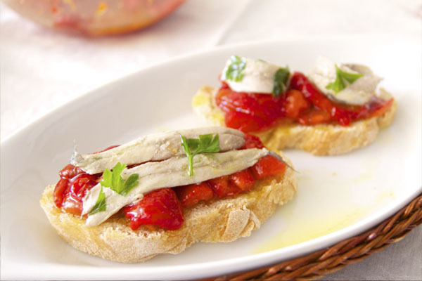
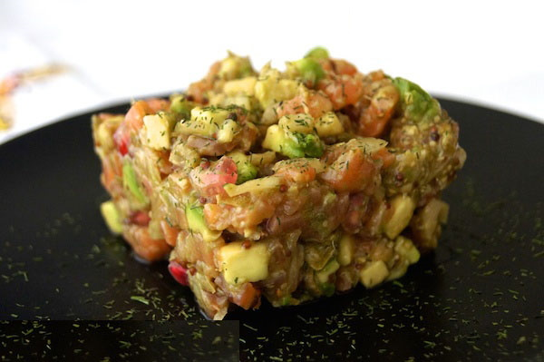
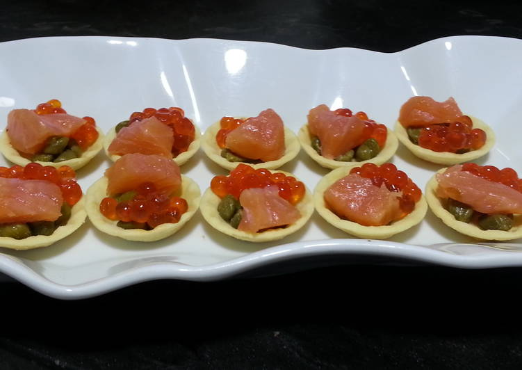
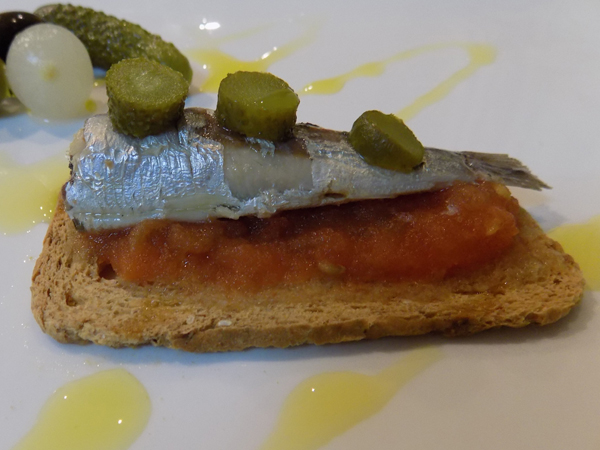
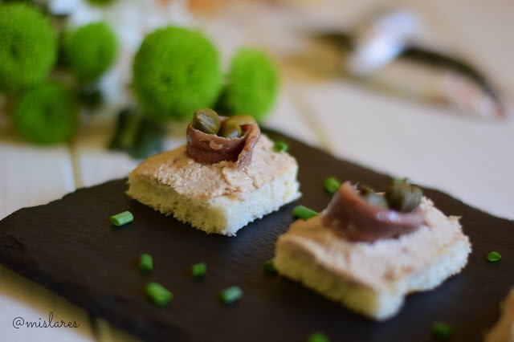
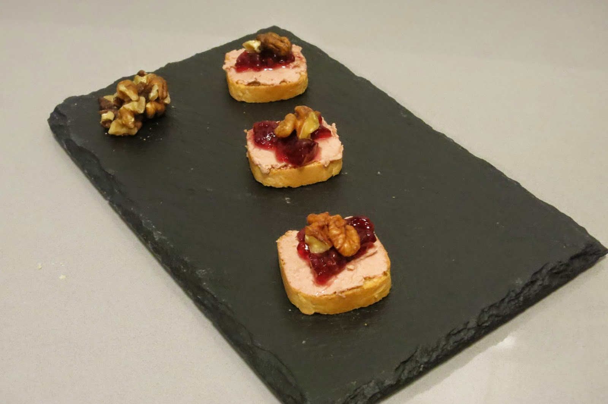

Enlace
a la receta de canapés de boquerones en vinagre con tiras de
pimiento asado
Enlace a la receta de canapés de salmón ahumado y aguacate
Enlace a la receta de canapés de salmón ahumado y huevas de caviar
Enlace a la receta de canapés de sardinas 1
Enlace a la receta de canapés de sardinas 2
Enlace a la receta de canapés de paté con frambuesa y nueces
INGREDIENTES
Canapés de salmón ahumado y aguacate:
- 100 gr de lomo de salmón ahumado
- 1 aguacate
- 1/2 cebolleta
- 1/2 lima o limón
- Alcaparras
- Granos de granada
- Eneldo picado
- Salsa de soja
- Aceite de oliva virgen extra
- Sal
- Tartaletas medianas
- (Opcional) Mostaza a la antigua
- (Opcional) Tabasco o wasabi
Canapés de sardinas 2:
- 1 lata y media de sardinas en aceite
- 2 cucharaditas de café de mantequilla a temperatura ambiente
- Pimienta recién molida
- Sal si hiciese falta
- 1 lata de anchoas
- Alcaparras
- Pan de molde tostado
ELABORACIÓN
Plato de sal sulfurosa negra Himalaya Kala Namak con aceite de oliva virgen extra
Canapés de boquerones en vinagre con tiras de pimiento asado
Canapés de salmón ahumado y aguacate
Pica la cebolla muy fina, y también las alcaparras.
En un bol, añade la cebolla y las alcaparras e incorpora estos ingredientes: salsa de soja, (opcional) una cucharadita de mostaza a la antigua, (opcional) 8 gotas de tabasco o un poco de wasabi, los granos de granada, un chorrito de aceite de oliva y una pizca de sal. Revuélvelo todo bien.
Corta el aguacate en cubitos pequeños y añade al bol. Rocía por encima con el zumo de media lima o limón y revuelve con el resto de ingredientes, aunque sin aplastar demasiado para que su forma cúbica permanezca (esto es solo por estética).
Corta el salmón en cubitos pequeños, añádelo al bol y mezcla con el resto de ingredientes.
Aunque se puede consumir inmediatamente, lo mejor es dejarlo reposar media hora para que los sabores se fusionen.
Servir en tartaletas medianas y echar un poco de eneldo picado por encima y por el plato.
Canapés de salmón ahumado y huevas de caviar
Canapés de sardinas 1
Usar tomate natural triturado.
Canapés de sardinas 2
Escurrimos las sardinas del aceite, les quitamos la piel y espinas. Troceamos las sardinas en el vaso de la batidora. Añadimos la mantequilla y batimos hasta que nos quede una pasta tipo paté. Untamos el pan tostado, que habremos quitado los bordes y partido en 4 trozos, enrollamos la anchoa escurrida del aceite y en el centro ponemos 3 alcaparras.
Canapés de paté con frambuesa y nueces
